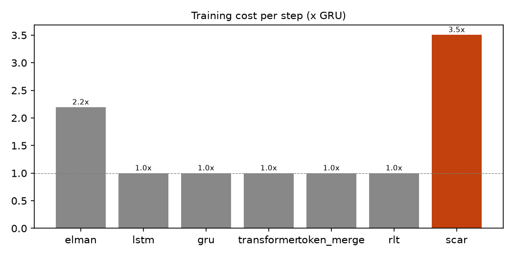

84 matched runs (~75–91K params): 7 architectures × parity/five × dense/sparse supervision × 3 seeds.
All numbers below are machine-derived from results/*.json (see
the repo).
Best accuracy each model reached across eval lengths 16–128 (mean of 3 seeds). Chance: parity 50%, five 20%.
| model | params | parity dense | parity sparse | five dense | five sparse |
|---|---|---|---|---|---|
| Elman RNN | 76,416 | 50.4 | 0.0 | 0.0 | 0.0 |
| SCAR (ours) | 77,896 | 52.4 | 0.0 | 0.0 | 34.4 |



Generated by build_site.py from data/summary.json; no hand-typed numbers.